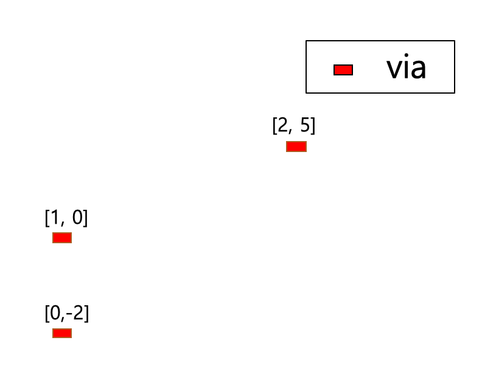
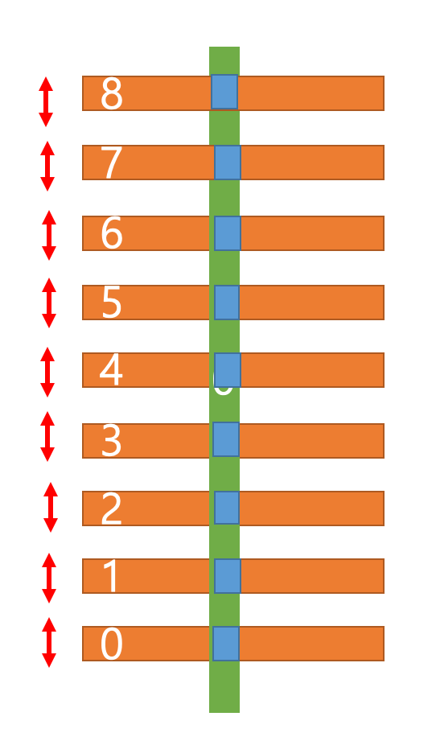
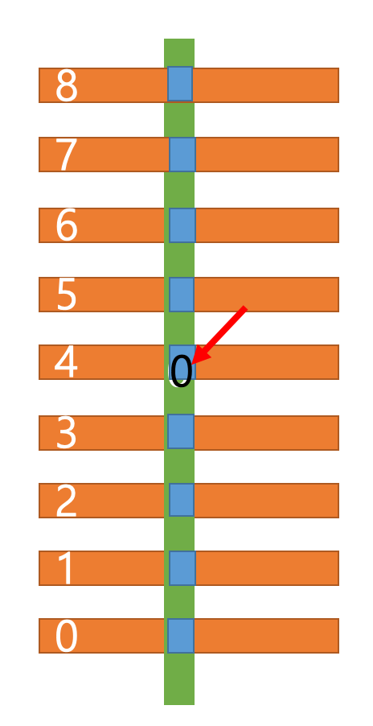
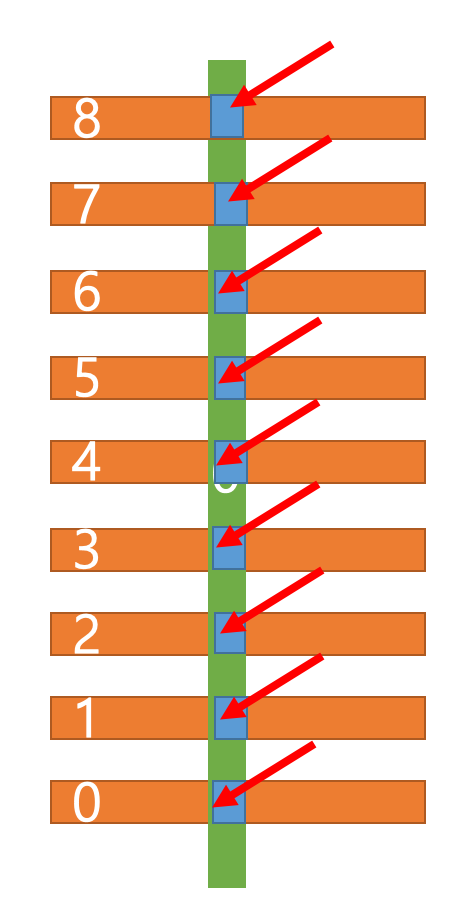
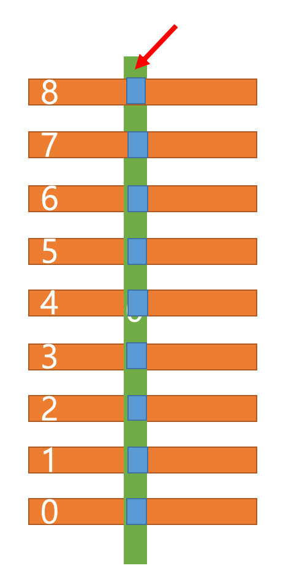
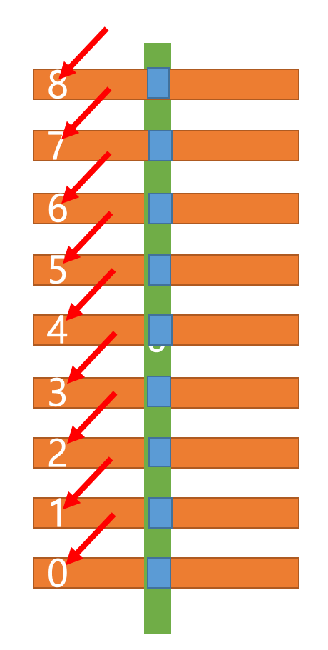

RoutingGrid class#
- class laygo2.object.grid.RoutingGrid(name, vgrid, hgrid, vwidth, hwidth, vextension, hextension, vlayer, hlayer, pin_vlayer, pin_hlayer, viamap, xcolor=None, ycolor=None, primary_grid='vertical', vextension0=None, hextension0=None)[source]#
Bases:
laygo2.object.grid.GridA class that implements wire connections in an abstract coordinate system.
Notes
(Korean) 추상 좌표계 상의 배선 동작을 구현하는 클래스.
Public Data Attributes:
Type of grid.
Width of vertical wires.
Width of horizontal wires.
Extension of vertical wires.
Extension of horizontal wires.
the array containing the extension of the zero-length wires on the vertical grid.
the array containing the extension of the zero-length wires on the horizontal grid.
Layer information of vertical wires.
Layer information of horizontal wires.
Layer information of vertical pin wires.
Layer information of horizontal pine wires.
Array containing Via objects positioned on grid crossing points.
The default direction of routing
Color of horizontal wires.
Color of vertical wires.
Inherited from
Gridthe name of the grid.
return elements of subgrids ([_xy[0].elements, _xy[1].elements]).
PhyToAbsGridConverter(master=self)
AbsToPhyGridConverter(master=self)
Two-dimensional _AbsToPhyConverter of a coordinate system.
One-dimensional _AbsToPhyGridConverter
One-dimensional _AbsToPhyGridConverter of the y-coordinate system.
OneDimGrid of the x-coordinate system (=self.x).
OneDimGrid of the y-coordinate system (=self.y).
Two-dimensional _PhyToAbsConverter of a coordinate system.
One-dimensional _PhyToAbsConverter of the x-coordinate system.
One-dimensional _PhyToAbsConverter of
Two-dimensional element length in a coordinate system.
Width of the region in which the coordinate system is defined.
Height of the region in which the coordinate system is defined.
Return the height vector [0, h].
Return width as a list.
Public Methods:
__init__(name, vgrid, hgrid, vwidth, hwidth, ...)Constructor function of RoutingGrid class.
route(mn[, direction, via_tag])Create wire object(s) for routing.
via([mn, params])Create Via object(s) on abstract grid.
route_via_track(mn, track[, via_tag])Perform routing on the specified track with accessing wires to mn.
pin(name, mn[, direction, netname, params])Create a Pin object over the abstract coordinates specified by mn, on the specified routing grid.
Inherited from
Gridset_range(value)__init__(name, vgrid, hgrid, vwidth, hwidth, ...)Constructor function of RoutingGrid class.
__getitem__(pos)__eq__(other)Return the physical grid coordinate that matches to other.
__lt__(other)Return the index of the grid coordinate that is the largest but less than other.
__le__(other)Return the index of the grid coordinate that is the largest but less than or equal to other.
__gt__(other)Return the index of the grid coordinate that is the smallest but greater than other.
__ge__(other)Return the index of the grid coordinate that is the smallest but greater than or equal to other.
bbox(obj)Return the abstract grid coordinates corresponding to the 'internal' bounding box of obj.
bottom_left(obj)Return the abstract grid coordinates corresponding to the bottom-left corner of obj.
bottom_right(obj)Return the abstract grid coordinates corresponding to the bottom-right corner of obj.
top_left(obj)Return the abstract grid coordinates corresponding to the top-left corner of obj.
top_right(obj)Return the abstract grid coordinates corresponding to the top-right corner of obj.
crossing(*args)Return the abstract grid coordinates corresponding to the crossing point of args.
overlap(*args[, type])Return the abstract grid coordinates corresponding to the overlap of args.
union(*args)Return the abstract grid coordinates corresponding to union of args.
center(obj)Return the abstract grid coordinates corresponding to the center point of obj.
__iter__()__next__()__str__()Return the string representation of the object.
Output the information of the respective grid.
- __init__(name, vgrid, hgrid, vwidth, hwidth, vextension, hextension, vlayer, hlayer, pin_vlayer, pin_hlayer, viamap, xcolor=None, ycolor=None, primary_grid='vertical', vextension0=None, hextension0=None)[source]#
Constructor function of RoutingGrid class.
- Parameters
name (str) – Routing object name
vgrid (laygo2.OneDimGrid) – OneDimGrid of x-coordinate system
hgrid (laygo2.OneDimGrid) – OneDimGrid of y-coordinate system
vwidth (CircularMapping) – x-coordinate system width
hwidth (CircularMapping) – y-coordinate system width
vextension (CircularMapping) – x-coordinate system extension
hextension (CircularMapping) – y-coordinate system extension
vlayer (CircularMapping) – x-coordinate system layer
hlayer (CircularMapping) – y-coordinate system layer
pin_vlayer (CircularMapping) – layer of x-coordinate system pin
pin_hlayer (CircularMapping) – layer of y-coordinate system pin
xcolor (list) – x-coordinate system color
ycolor (list) – y-coordinate system color
viamap (CircularMappingArray) – Via map of Grid
primary_grid (str) – direction of wire having length 0
- Return type
laygo2.RoutingGrid
Example
>>> import laygo2 >>> from laygo2.object.grid import CircularMapping as CM >>> from laygo2.object.grid import CircularMappingArray as CMA >>> from laygo2.object.grid import OneDimGrid, RoutingGrid >>> from laygo2.object.template import NativeInstanceTemplate >>> from laygo2.object.physical import Instance >>> # Routing grid construction (not needed if laygo2_tech is set up). >>> gv = OneDimGrid(name="gv", scope=[0, 50], elements=[0]) >>> gh = OneDimGrid(name="gv", scope=[0, 100], elements=[0, 40, 60]) >>> wv = CM([10]) # vertical (xgrid) width >>> wh = CM([20, 10, 10]) # horizontal (ygrid) width >>> ev = CM([10]) # vertical (xgrid) extension >>> eh = CM([10, 10, 10]) # horizontal (ygrid) extension >>> e0v = CM([15]) # vert. extension (for zero-length wires) >>> e0h = CM([15, 15, 15]) # hori. extension (for zero-length wires) >>> lv = CM([['M1', 'drawing']], dtype=object) # layer information >>> lh = CM([['M2', 'drawing']]*3, dtype=object) >>> plv = CM([['M1', 'pin']], dtype=object) # pin layers >>> plh = CM([['M2', 'pin']]*3, dtype=object) >>> xcolor = CM([None], dtype=object) # not multi-patterned >>> ycolor = CM([None]*3, dtype=object) >>> primary_grid = 'horizontal' >>> tvia = NativeInstanceTemplate(libname='tlib', cellname='via0') # via >>> viamap = CMA(elements=[[tvia, tvia, tvia]], dtype=object) >>> g = RoutingGrid(name='mygrid', vgrid=gv, hgrid=gh, vwidth=wv, hwidth=wh, vextension=ev, hextension=eh, vlayer=lv, hlayer=lh, pin_vlayer=plv, pin_hlayer=plh, viamap=viamap, primary_grid=primary_grid, xcolor=xcolor, ycolor=ycolor, vextension0=e0v, hextension0=e0h) >>> # Routing on grid >>> mn_list = [[0, -2], [0, 1], [2, 1], [5,1] ] >>> route = g.route(mn=mn_list, via_tag=[True, None, True, True]) >>> for r in route: >>> print(r) <laygo2.object.physical.Instance object at 0x0000016939A23A90> name: None, class: Instance, xy: [0, -60], params: None, size: [0, 0] shape: None pitch: [0, 0] transform: R0 pins: {} <laygo2.object.physical.Rect object at 0x0000016939A23880> name: None, class: Rect, xy: [[0, -60], [0, 40]], params: None, , layer: ['M1' 'drawing'], netname: None <laygo2.object.physical.Rect object at 0x0000016939A21BA0> name: None, class: Rect, xy: [[0, 40], [100, 40]], params: None, , layer: ['M2' 'drawing'], netname: None <laygo2.object.physical.Instance object at 0x0000016939A21B70> name: None, class: Instance, xy: [100, 40], params: None, size: [0, 0] shape: None pitch: [0, 0] transform: R0 pins: {} <laygo2.object.physical.Rect object at 0x0000016939A21D80> name: None, class: Rect, xy: [[100, 40], [250, 40]], params: None, , layer: ['M2' 'drawing'], netname: None <laygo2.object.physical.Instance object at 0x0000016939A22350> name: None, class: Instance, xy: [250, 40], params: None, size: [0, 0] shape: None pitch: [0, 0] transform: R0 pins: {}
Notes
(Korean) RoutingGrid 클래스의 생성자함수. 파라미터 name(str): Routing 객체의 이름 vgrid(laygo2.OneDimGrid): x좌표계 OneDimGrid hgrid(laygo2.OneDimGrid): y좌표계 OneDimGrid vwidth(CircularMapping): x좌표계 Width hwidth(CircularMapping): y좌표계 Width vextension(CircularMapping): x좌표계의 extension hextension(CircularMapping): y좌표계의 extension vlayer(CircularMapping): x좌표계의 layer hlayer(CircularMapping): y좌표계의 layer pin_vlayer(CircularMapping): x좌표계 pin의 layer pin_hlayer(CircularMapping): y좌표계 pin의 layer xcolor(list): x좌표계 color ycolor(list): y좌표계 color viamap(CircularMappingArray): Grid의 Via map primary_grid(str): 길이가 0인 Wire방향 반환값 laygo2.RoutingGrid 참조 없음
- bbox(obj)#
Return the abstract grid coordinates corresponding to the ‘internal’ bounding box of obj.
See also
- bottom_left(obj)#
Return the abstract grid coordinates corresponding to the bottom-left corner of obj.
See also
- bottom_right(obj)#
Return the abstract grid coordinates corresponding to the bottom-right corner of obj.
See also
- center(obj)#
Return the abstract grid coordinates corresponding to the center point of obj.
- Parameters
obj (laygo2.object.physical.PhysicalObject) – The object of which center coordinate is computed.
- crossing(*args)#
Return the abstract grid coordinates corresponding to the crossing point of args.
- get_range()#
- overlap(*args, type='bbox')#
Return the abstract grid coordinates corresponding to the overlap of args.
- pin(name, mn, direction=None, netname=None, params=None)[source]#
Create a Pin object over the abstract coordinates specified by mn, on the specified routing grid.
- Parameters
name (str) – Pin name.
mn (numpy.ndarray) – Abstract coordinates for generating Pin.
direction (str, optional.) – Direction.
netname (str, optional.) – Net name of Pin.
params (dict, optional) – Pin attributes.
- Returns
laygo2.physical.Pin
- Return type
The generated pin object.
Example
>>> import laygo2 >>> from laygo2.object.grid import CircularMapping as CM >>> from laygo2.object.grid import CircularMappingArray as CMA >>> from laygo2.object.grid import OneDimGrid, RoutingGrid >>> from laygo2.object.template import NativeInstanceTemplate >>> # Routing grid construction (not needed if laygo2_tech is set up). >>> gv = OneDimGrid(name="gv", scope=[0, 50], elements=[0]) >>> gh = OneDimGrid(name="gv", scope=[0, 100], elements=[0, 40, 60]) >>> wv = CM([10]) # vertical (xgrid) width >>> wh = CM([20, 10, 10]) # horizontal (ygrid) width >>> ev = CM([10]) # vertical (xgrid) extension >>> eh = CM([10, 10, 10]) # horizontal (ygrid) extension >>> e0v = CM([15]) # vert. extension (for zero-length wires) >>> e0h = CM([15, 15, 15]) # hori. extension (for zero-length wires) >>> lv = CM([['M1', 'drawing']], dtype=object) # layer information >>> lh = CM([['M2', 'drawing']]*3, dtype=object) >>> plv = CM([['M1', 'pin']], dtype=object) # pin layers >>> plh = CM([['M2', 'pin']]*3, dtype=object) >>> xcolor = CM([None], dtype=object) # not multi-patterned >>> ycolor = CM([None]*3, dtype=object) >>> primary_grid = 'horizontal' >>> tvia = NativeInstanceTemplate(libname='tlib', cellname='via0') # via >>> viamap = CMA(elements=[[tvia, tvia, tvia]], dtype=object) >>> g = laygo2.object.grid.RoutingGrid(name='mygrid', vgrid=gv, hgrid=gh, vwidth=wv, hwidth=wh, vextension=ev, hextension=eh, vlayer=lv, hlayer=lh, pin_vlayer=plv, pin_hlayer=plh, viamap=viamap, primary_grid=primary_grid, xcolor=xcolor, ycolor=ycolor, vextension0=e0v, hextension0=e0h) >>> mn = [[0, 0], [10, 10]] >>> pin = g.pin(name="pin", grid=g, mn=mn) >>> print(pin) <laygo2.object.physical.Pin object at 0x0000028DABE3AB90> name: pin, class: Pin, xy: [[0, -10], [500, 350]], params: None, , layer: ['M2' 'pin'], netname: pin, shape: None, master: None
Notes
(Korean) pin 생성함수.
- 파라미터
name(str): Pin 이름
mn(numpy.ndarray): Pin을 생성할 abstract 좌표
direction(str): 방향 [optional]
netname(str): Pin의 net이름 [optional]
params(dict): Pin 속성 [optional]
- 반환값
laygo2.physical.Pin: Pin object
- route(mn, direction=None, via_tag=None)[source]#
Create wire object(s) for routing.
- Parameters
mn (list(numpy.ndarray)) – The list containing two or more mn coordinates to be connected.
direction (str, optional.) – None or “vertical” or “horizontal”. The direction of the routing object.
via_tag (list(Boolean), optional.) – The list containing switches deciding whether to place via at the edges.
- Returns
The generated routing object(s). Check the example code for details.
- Return type
Example
>>> import laygo2 >>> from laygo2.object.grid import CircularMapping as CM >>> from laygo2.object.grid import CircularMappingArray as CMA >>> from laygo2.object.grid import OneDimGrid, RoutingGrid >>> from laygo2.object.template import NativeInstanceTemplate >>> from laygo2.object.physical import Instance >>> # Routing grid construction (not needed if laygo2_tech is set up). >>> gv = OneDimGrid(name="gv", scope=[0, 50], elements=[0]) >>> gh = OneDimGrid(name="gv", scope=[0, 100], elements=[0, 40, 60]) >>> wv = CM([10]) # vertical (xgrid) width >>> wh = CM([20, 10, 10]) # horizontal (ygrid) width >>> ev = CM([10]) # vertical (xgrid) extension >>> eh = CM([10, 10, 10]) # horizontal (ygrid) extension >>> e0v = CM([15]) # vert. extension (for zero-length wires) >>> e0h = CM([15, 15, 15]) # hori. extension (for zero-length wires) >>> lv = CM([['M1', 'drawing']], dtype=object) # layer information >>> lh = CM([['M2', 'drawing']]*3, dtype=object) >>> plv = CM([['M1', 'pin']], dtype=object) # pin layers >>> plh = CM([['M2', 'pin']]*3, dtype=object) >>> xcolor = CM([None], dtype=object) # not multi-patterned >>> ycolor = CM([None]*3, dtype=object) >>> primary_grid = 'horizontal' >>> tvia = NativeInstanceTemplate(libname='tlib', cellname='via0') # via >>> viamap = CMA(elements=[[tvia, tvia, tvia]], dtype=object) >>> g = laygo2.object.grid.RoutingGrid(name='mygrid', vgrid=gv, hgrid=gh, vwidth=wv, hwidth=wh, vextension=ev, hextension=eh, vlayer=lv, hlayer=lh, pin_vlayer=plv, pin_hlayer=plh, viamap=viamap, primary_grid=primary_grid, xcolor=xcolor, ycolor=ycolor, vextension0=e0v, hextension0=e0h) >>> # Routing on grid >>> mn_list = [[0, -2], [0, 1], [2, 1], [5,1] ] >>> route = g.route(mn=mn_list, via_tag=[True, None, True, True]) >>> for r in route: >>> print(r) <laygo2.object.physical.Instance object at 0x0000016939A23A90> name: None, class: Instance, xy: [0, -60], params: None, size: [0, 0] shape: None pitch: [0, 0] transform: R0 pins: {} <laygo2.object.physical.Rect object at 0x0000016939A23880> name: None, class: Rect, xy: [[0, -60], [0, 40]], params: None, , layer: ['M1' 'drawing'], netname: None <laygo2.object.physical.Rect object at 0x0000016939A21BA0> name: None, class: Rect, xy: [[0, 40], [100, 40]], params: None, , layer: ['M2' 'drawing'], netname: None <laygo2.object.physical.Instance object at 0x0000016939A21B70> name: None, class: Instance, xy: [100, 40], params: None, size: [0, 0] shape: None pitch: [0, 0] transform: R0 pins: {} <laygo2.object.physical.Rect object at 0x0000016939A21D80> name: None, class: Rect, xy: [[100, 40], [250, 40]], params: None, , layer: ['M2' 'drawing'], netname: None <laygo2.object.physical.Instance object at 0x0000016939A22350> name: None, class: Instance, xy: [250, 40], params: None, size: [0, 0] shape: None pitch: [0, 0] transform: R0 pins: {}

Notes
(Korean) 추상 좌표 위에 라우팅을 수행 하는 함수. 파라미터 mn(list(numpy.ndarray)): 배선을 수행할 2개 이상의 mn 좌표를 담고 있는 list. direction(str): None or “vertical”; path의 방향을 결정 (수평 or 수직) [optional]. via_tag(list(Boolean)): Path에 via를 형성 할지를 결정하는 switch들을 담고 있는 list [optional]. 반환값 list: 생성된 routing object들을 담고 있는 list.
- route_via_track(mn, track, via_tag=[None, True])[source]#
Perform routing on the specified track with accessing wires to mn.
- Parameters
mn (list(numpy.ndarray)) – list containing coordinates of the points being connected through a track
track (numpy.ndarray) – list containing coordinate values and direction of a track. Vertical tracks have [v, None] format, while horizontal tracks have [None, v] format (v is the coordinates of the track).
- Returns
The list containing the generated routing objects; The last object corresponds to the routing object on the track.
- Return type
Example
>>> import laygo2 >>> from laygo2.object.grid import CircularMapping as CM >>> from laygo2.object.grid import CircularMappingArray as CMA >>> from laygo2.object.grid import OneDimGrid, RoutingGrid >>> from laygo2.object.template import NativeInstanceTemplate >>> from laygo2.object.physical import Instance >>> # Routing grid construction (not needed if laygo2_tech is set up). >>> gv = OneDimGrid(name="gv", scope=[0, 50], elements=[0]) >>> gh = OneDimGrid(name="gv", scope=[0, 100], elements=[0, 40, 60]) >>> wv = CM([10]) # vertical (xgrid) width >>> wh = CM([20, 10, 10]) # horizontal (ygrid) width >>> ev = CM([10]) # vertical (xgrid) extension >>> eh = CM([10, 10, 10]) # horizontal (ygrid) extension >>> e0v = CM([15]) # vert. extension (for zero-length wires) >>> e0h = CM([15, 15, 15]) # hori. extension (for zero-length wires) >>> lv = CM([['M1', 'drawing']], dtype=object) # layer information >>> lh = CM([['M2', 'drawing']]*3, dtype=object) >>> plv = CM([['M1', 'pin']], dtype=object) # pin layers >>> plh = CM([['M2', 'pin']]*3, dtype=object) >>> xcolor = CM([None], dtype=object) # not multi-patterned >>> ycolor = CM([None]*3, dtype=object) >>> primary_grid = 'horizontal' >>> tvia = NativeInstanceTemplate(libname='tlib', cellname='via0') # via >>> viamap = CMA(elements=[[tvia, tvia, tvia]], dtype=object) >>> g = laygo2.object.grid.RoutingGrid(name='mygrid', vgrid=gv, hgrid=gh, vwidth=wv, hwidth=wh, vextension=ev, hextension=eh, vlayer=lv, hlayer=lh, pin_vlayer=plv, pin_hlayer=plh, viamap=viamap, primary_grid=primary_grid, xcolor=xcolor, ycolor=ycolor, vextension0=e0v, hextension0=e0h) >>> # Routing on grid >>> mn_list = [[0, -2], [1, 0], [2, 5], [3, 4], [4, 5], [5, 5]] >>> track = g.route_via_track(mn=mn_list, track=[None, 0]) >>> print(track) [[<laygo2.object.physical.Rect object>, <laygo2.object.physical.VirtualInstance object>], <laygo2.object.physical.VirtualInstance object>, [<laygo2.object.physical.Rect object>, <laygo2.object.physical.VirtualInstance object>], [<laygo2.object.physical.Rect object>, <laygo2.object.physical.VirtualInstance object>], [<laygo2.object.physical.Rect object>, <laygo2.object.physical.VirtualInstance object>], [<laygo2.object.physical.Rect object>, <laygo2.object.physical.VirtualInstance object>], <laygo2.object.physical.Rect object>]

Notes
(Korean) wire 라우팅 함수, track을 기준점으로 routing을 진행한다.
- 파라미터
- track(numpy.ndarray): track의 좌표값과 방향을 담고 있는 list.
수직 트랙일 경우 [v, None], 수평 트랙일 경우 [None, v]의 형태를 가지고 있다 (v는 track의 좌표값).
mn(list(numpy.ndarray)): track을 통해 연결될 지점들의 좌표를 담고 있는 list.
- 반환값
- list: 생성된 routing object들을 담고 있는 list.
마지막 object가 track위의 routing object에 해당.
- set_range(value)#
- summarize()#
Output the information of the respective grid.
- Parameters
None –
- Return type
Example
>>> from laygo2.object.grid import OneDimGrid, Grid >>> g1_x = OneDimGrid(name='xgrid', scope=[0, 100], elements=[0, 10, 20, 40, 50 ]) >>> g1_y = OneDimGrid(name='ygrid', scope=[0, 100], elements=[10, 20, 40, 50, 60 ]) >>> g2 = Grid(name="test", vgrid = g1_x, hgrid = g1_y ) >>> g2.summarize() <laygo2.object.grid.Grid object> name: test, class: Grid, scope: [[0, 0], [100, 100]], elements: [array([ 0, 10, 20, 40, 50]), array([10, 20, 40, 50, 60])
Notes
(Korean) 해당 Grid의 정보 출력.
- top_left(obj)#
Return the abstract grid coordinates corresponding to the top-left corner of obj.
See also
- top_right(obj)#
Return the abstract grid coordinates corresponding to the top-right corner of obj.
See also
- union(*args)#
Return the abstract grid coordinates corresponding to union of args.
- via(mn=array([0, 0]), params=None)[source]#
Create Via object(s) on abstract grid.
- Parameters
mn (list(numpy.ndarray)) – Abstract coordinate(s) that specify location(s) to insert via(s).
- Returns
The list containing the generated via objects.
- Return type
Example
>>> import laygo2 >>> from laygo2.object.grid import CircularMapping as CM >>> from laygo2.object.grid import CircularMappingArray as CMA >>> from laygo2.object.grid import OneDimGrid, RoutingGrid >>> from laygo2.object.template import NativeInstanceTemplate >>> from laygo2.object.physical import Instance >>> # Routing grid construction (not needed if laygo2_tech is set up). >>> gv = OneDimGrid(name="gv", scope=[0, 50], elements=[0]) >>> gh = OneDimGrid(name="gv", scope=[0, 100], elements=[0, 40, 60]) >>> wv = CM([10]) # vertical (xgrid) width >>> wh = CM([20, 10, 10]) # horizontal (ygrid) width >>> ev = CM([10]) # vertical (xgrid) extension >>> eh = CM([10, 10, 10]) # horizontal (ygrid) extension >>> e0v = CM([15]) # vert. extension (for zero-length wires) >>> e0h = CM([15, 15, 15]) # hori. extension (for zero-length wires) >>> lv = CM([['M1', 'drawing']], dtype=object) # layer information >>> lh = CM([['M2', 'drawing']]*3, dtype=object) >>> plv = CM([['M1', 'pin']], dtype=object) # pin layers >>> plh = CM([['M2', 'pin']]*3, dtype=object) >>> xcolor = CM([None], dtype=object) # not multi-patterned >>> ycolor = CM([None]*3, dtype=object) >>> primary_grid = 'horizontal' >>> tvia = NativeInstanceTemplate(libname='tlib', cellname='via0') # via >>> viamap = CMA(elements=[[tvia, tvia, tvia]], dtype=object) >>> g = laygo2.object.grid.RoutingGrid(name='mygrid', vgrid=gv, hgrid=gh, vwidth=wv, hwidth=wh, vextension=ev, hextension=eh, vlayer=lv, hlayer=lh, pin_vlayer=plv, pin_hlayer=plh, viamap=viamap, primary_grid=primary_grid, xcolor=xcolor, ycolor=ycolor, vextension0=e0v, hextension0=e0h) >>> # Routing on grid >>> mn_list = [[0, -2], [1, 0], [2, 5]] >>> via = mygrid.via(mn=mn_list) >>> print(via) [<laygo2.object.physical.VirtualInstance object>, <laygo2.object.physical.VirtualInstance object>, <laygo2.object.physical.VirtualInstance object>]
Notes
(Korean) via 생성함수.
- 파라미터
mn(list(numpy.ndarray)): via를 생성할 mn좌표. 복수 개 입력 가능.
- 반환값
list(physical.PhysicalObject)): 생성된 via들을 담고 있는 list.
- _xy = None#
the list contains the 1d-grid objects for x and y axes.
- Type
List[OneDimGrid]
- abs2phy = None#
AbsToPhyGridConverter(master=self)
- property h#
OneDimGrid of the y-coordinate system (=self.y).
Example
>>> from laygo2.object.grid import OneDimGrid, Grid >>> g1_x = OneDimGrid(name='xgrid', scope=[0, 100], elements=[0, 10, 20, 40, 50 ]) >>> g1_y = OneDimGrid(name='ygrid', scope=[0, 100], elements=[10, 20, 40, 50, 60 ]) >>> g2 = Grid(name="test", vgrid = g1_x, hgrid = g1_y ) >>> g2.h g1_y
Notes
(Korean) y좌표계 OneDimGrid.
- Type
- property height#
Height of the region in which the coordinate system is defined.
Example
>>> from laygo2.object.grid import OneDimGrid, Grid >>> g1_x = OneDimGrid(name='xgrid', scope=[0, 100], elements=[0, 10, 20, 40, 50 ]) >>> g1_y = OneDimGrid(name='ygrid', scope=[0, 100], elements=[10, 20, 40, 50, 60 ]) >>> g2 = Grid(name="test", vgrid = g1_x, hgrid = g1_y ) >>> g2.height 100
Notes
(Korean) 좌표계가 정의된 영역의 높이.
- Type
numpy.int32
- property height_vec#
Return the height vector [0, h].
Example
>>> from laygo2.object.grid import OneDimGrid, Grid >>> g1_x = OneDimGrid(name='xgrid', scope=[0, 100], elements=[0, 10, 20, 40, 50 ]) >>> g1_y = OneDimGrid(name='ygrid', scope=[0, 100], elements=[10, 20, 40, 50, 60 ]) >>> g2 = Grid(name="test", vgrid = g1_x, hgrid = g1_y ) >>> g2.height_vec [0, 100]
Notes
(Korean) height를 list로 반환.
- Type
- hextension = None#
Extension of horizontal wires.
Example
>>> import laygo2 >>> from laygo2.object.grid import CircularMapping as CM >>> from laygo2.object.grid import CircularMappingArray as CMA >>> from laygo2.object.grid import OneDimGrid, RoutingGrid >>> from laygo2.object.template import NativeInstanceTemplate >>> # Routing grid construction (not needed if laygo2_tech is set up). >>> gv = OneDimGrid(name="gv", scope=[0, 50], elements=[0]) >>> gh = OneDimGrid(name="gv", scope=[0, 100], elements=[0, 40, 60]) >>> wv = CM([10]) # vertical (xgrid) width >>> wh = CM([20, 10, 10]) # horizontal (ygrid) width >>> ev = CM([10]) # vertical (xgrid) extension >>> eh = CM([10, 10, 10]) # horizontal (ygrid) extension >>> e0v = CM([15]) # vert. extension (for zero-length wires) >>> e0h = CM([15, 15, 15]) # hori. extension (for zero-length wires) >>> lv = CM([['M1', 'drawing']], dtype=object) # layer information >>> lh = CM([['M2', 'drawing']]*3, dtype=object) >>> plv = CM([['M1', 'pin']], dtype=object) # pin layers >>> plh = CM([['M2', 'pin']]*3, dtype=object) >>> xcolor = CM([None], dtype=object) # not multi-patterned >>> ycolor = CM([None]*3, dtype=object) >>> primary_grid = 'horizontal' >>> tvia = NativeInstanceTemplate(libname='tlib', cellname='via0') # via >>> viamap = CMA(elements=[[tvia, tvia, tvia]], dtype=object) >>> g = laygo2.object.grid.RoutingGrid(name='mygrid', vgrid=gv, hgrid=gh, vwidth=wv, hwidth=wh, vextension=ev, hextension=eh, vlayer=lv, hlayer=lh, pin_vlayer=plv, pin_hlayer=plh, viamap=viamap, primary_grid=primary_grid, xcolor=xcolor, ycolor=ycolor, vextension0=e0v, hextension0=e0h) >>> print(g.hextension) <laygo2.object.grid.CircularMapping object > class: CircularMapping, elements: [10, 10, 10]
Notes
(Korean) 수평 wire들의 extension.
- Type
- hextension0 = None#
the array containing the extension of the zero-length wires on the horizontal grid.
Example
>>> import laygo2 >>> from laygo2.object.grid import CircularMapping as CM >>> from laygo2.object.grid import CircularMappingArray as CMA >>> from laygo2.object.grid import OneDimGrid, RoutingGrid >>> from laygo2.object.template import NativeInstanceTemplate >>> # Routing grid construction (not needed if laygo2_tech is set up). >>> gv = OneDimGrid(name="gv", scope=[0, 50], elements=[0]) >>> gh = OneDimGrid(name="gv", scope=[0, 100], elements=[0, 40, 60]) >>> wv = CM([10]) # vertical (xgrid) width >>> wh = CM([20, 10, 10]) # horizontal (ygrid) width >>> ev = CM([10]) # vertical (xgrid) extension >>> eh = CM([10, 10, 10]) # horizontal (ygrid) extension >>> e0v = CM([15]) # vert. extension (for zero-length wires) >>> e0h = CM([15, 15, 15]) # hori. extension (for zero-length wires) >>> lv = CM([['M1', 'drawing']], dtype=object) # layer information >>> lh = CM([['M2', 'drawing']]*3, dtype=object) >>> plv = CM([['M1', 'pin']], dtype=object) # pin layers >>> plh = CM([['M2', 'pin']]*3, dtype=object) >>> xcolor = CM([None], dtype=object) # not multi-patterned >>> ycolor = CM([None]*3, dtype=object) >>> primary_grid = 'horizontal' >>> tvia = NativeInstanceTemplate(libname='tlib', cellname='via0') # via >>> viamap = CMA(elements=[[tvia, tvia, tvia]], dtype=object) >>> g = laygo2.object.grid.RoutingGrid(name='mygrid', vgrid=gv, hgrid=gh, vwidth=wv, hwidth=wh, vextension=ev, hextension=eh, vlayer=lv, hlayer=lh, pin_vlayer=plv, pin_hlayer=plh, viamap=viamap, primary_grid=primary_grid, xcolor=xcolor, ycolor=ycolor, vextension0=e0v, hextension0=e0h) >>> print(g.hextension0) <laygo2.object.grid.CircularMapping object > class: CircularMapping, elements: [15, 15, 15]
- Type
- hlayer = None#
Layer information of horizontal wires.
Example
>>> import laygo2 >>> from laygo2.object.grid import CircularMapping as CM >>> from laygo2.object.grid import CircularMappingArray as CMA >>> from laygo2.object.grid import OneDimGrid, RoutingGrid >>> from laygo2.object.template import NativeInstanceTemplate >>> # Routing grid construction (not needed if laygo2_tech is set up). >>> gv = OneDimGrid(name="gv", scope=[0, 50], elements=[0]) >>> gh = OneDimGrid(name="gv", scope=[0, 100], elements=[0, 40, 60]) >>> wv = CM([10]) # vertical (xgrid) width >>> wh = CM([20, 10, 10]) # horizontal (ygrid) width >>> ev = CM([10]) # vertical (xgrid) extension >>> eh = CM([10, 10, 10]) # horizontal (ygrid) extension >>> e0v = CM([15]) # vert. extension (for zero-length wires) >>> e0h = CM([15, 15, 15]) # hori. extension (for zero-length wires) >>> lv = CM([['M1', 'drawing']], dtype=object) # layer information >>> lh = CM([['M2', 'drawing']]*3, dtype=object) >>> plv = CM([['M1', 'pin']], dtype=object) # pin layers >>> plh = CM([['M2', 'pin']]*3, dtype=object) >>> xcolor = CM([None], dtype=object) # not multi-patterned >>> ycolor = CM([None]*3, dtype=object) >>> primary_grid = 'horizontal' >>> tvia = NativeInstanceTemplate(libname='tlib', cellname='via0') # via >>> viamap = CMA(elements=[[tvia, tvia, tvia]], dtype=object) >>> g = laygo2.object.grid.RoutingGrid(name='mygrid', vgrid=gv, hgrid=gh, vwidth=wv, hwidth=wh, vextension=ev, hextension=eh, vlayer=lv, hlayer=lh, pin_vlayer=plv, pin_hlayer=plh, viamap=viamap, primary_grid=primary_grid, xcolor=xcolor, ycolor=ycolor, vextension0=e0v, hextension0=e0h) >>> print(g.hlayer) <laygo2.object.grid.CircularMapping object > class: CircularMapping, elements: [['M1', 'drawing'], ['M1', 'drawing'], ['M1', 'drawing']]
Notes
(Korean) 수평 wire들의 레이어정보.
- Type
- hwidth = None#
Width of horizontal wires.
Example
>>> import laygo2 >>> from laygo2.object.grid import CircularMapping as CM >>> from laygo2.object.grid import CircularMappingArray as CMA >>> from laygo2.object.grid import OneDimGrid, RoutingGrid >>> from laygo2.object.template import NativeInstanceTemplate >>> # Routing grid construction (not needed if laygo2_tech is set up). >>> gv = OneDimGrid(name="gv", scope=[0, 50], elements=[0]) >>> gh = OneDimGrid(name="gv", scope=[0, 100], elements=[0, 40, 60]) >>> wv = CM([10]) # vertical (xgrid) width >>> wh = CM([20, 10, 10]) # horizontal (ygrid) width >>> ev = CM([10]) # vertical (xgrid) extension >>> eh = CM([10, 10, 10]) # horizontal (ygrid) extension >>> e0v = CM([15]) # vert. extension (for zero-length wires) >>> e0h = CM([15, 15, 15]) # hori. extension (for zero-length wires) >>> lv = CM([['M1', 'drawing']], dtype=object) # layer information >>> lh = CM([['M2', 'drawing']]*3, dtype=object) >>> plv = CM([['M1', 'pin']], dtype=object) # pin layers >>> plh = CM([['M2', 'pin']]*3, dtype=object) >>> xcolor = CM([None], dtype=object) # not multi-patterned >>> ycolor = CM([None]*3, dtype=object) >>> primary_grid = 'horizontal' >>> tvia = NativeInstanceTemplate(libname='tlib', cellname='via0') # via >>> viamap = CMA(elements=[[tvia, tvia, tvia]], dtype=object) >>> g = laygo2.object.grid.RoutingGrid(name='mygrid', vgrid=gv, hgrid=gh, vwidth=wv, hwidth=wh, vextension=ev, hextension=eh, vlayer=lv, hlayer=lh, pin_vlayer=plv, pin_hlayer=plh, viamap=viamap, primary_grid=primary_grid, xcolor=xcolor, ycolor=ycolor, vextension0=e0v, hextension0=e0h) >>> print(g.hwidth) <laygo2.object.grid.CircularMapping object > class: CircularMapping, elements: [20, 10, 10]
See also
vwidth,hwidth,vextension,hextension,vextension0,hextension0Notes
(Korean) 수평 wire들의 폭.
- Type
- property m#
One-dimensional _PhyToAbsConverter of the x-coordinate system.
Example
>>> from laygo2.object.grid import OneDimGrid, Grid >>> g1_x = OneDimGrid(name='xgrid', scope=[0, 100], elements=[0, 10, 20, 40, 50 ]) >>> g1_y = OneDimGrid(name='ygrid', scope=[0, 100], elements=[10, 20, 40, 50, 60 ]) >>> g2 = Grid(name="test", vgrid = g1_x, hgrid = g1_y ) >>> g2.n[40] 2 >>> g2.n(40) 2 >>> g2.n < 40 760 >>> g2.n <= 40 810 >>> g2.n > 40 820 >>> g2.n >= 40 810
Notes
(Korean) x좌표계 1차원 _PhyToAbsConverter.
- property mn#
Two-dimensional _PhyToAbsConverter of a coordinate system.
Example
>>> from laygo2.object.grid import OneDimGrid, Grid >>> g1_x = OneDimGrid(name='xgrid', scope=[0, 100], elements=[0, 10, 20, 40, 50 ]) >>> g1_y = OneDimGrid(name='ygrid', scope=[0, 100], elements=[10, 20, 40, 50, 60 ]) >>> g2 = Grid(name="test", vgrid = g1_x, hgrid = g1_y ) >>> g2.mn[40,40] [3, 2] >>> g2.mn([40, 40]) [3, 2] >>> g2.mn < [40,40] [750, 760] >>> g2.mn <= [40,40] [800, 810] >>> g2.mn > [40,40] [810, 820] >>> g2.mn >= [40,40] [800, 810]
Notes
(Korean) 좌표계 2차원 _PhyToAbsConverter.
- Type
laygo2._PhyToAbsGridConverter
- property n#
- One-dimensional _PhyToAbsConverter of
the y-coordinate system.
Example
>>> from laygo2.object.grid import OneDimGrid, Grid >>> g1_x = OneDimGrid(name='xgrid', scope=[0, 100], elements=[0, 10, 20, 40, 50 ]) >>> g1_y = OneDimGrid(name='ygrid', scope=[0, 100], elements=[10, 20, 40, 50, 60 ]) >>> g2 = Grid(name="test", vgrid = g1_x, hgrid = g1_y ) >>> g2.n[40] 2 >>> g2.n(40) 2 >>> g2.n < 40 760 >>> g2.n <= 40 810 >>> g2.n > 40 820 >>> g2.n >= 40 810
Notes
(Korean) y좌표계 1차원 _PhyToAbsConverter.
- phy2abs = None#
PhyToAbsGridConverter(master=self)
- pin_hlayer = None#
Layer information of horizontal pine wires.
Example
>>> import laygo2 >>> from laygo2.object.grid import CircularMapping as CM >>> from laygo2.object.grid import CircularMappingArray as CMA >>> from laygo2.object.grid import OneDimGrid, RoutingGrid >>> from laygo2.object.template import NativeInstanceTemplate >>> # Routing grid construction (not needed if laygo2_tech is set up). >>> gv = OneDimGrid(name="gv", scope=[0, 50], elements=[0]) >>> gh = OneDimGrid(name="gv", scope=[0, 100], elements=[0, 40, 60]) >>> wv = CM([10]) # vertical (xgrid) width >>> wh = CM([20, 10, 10]) # horizontal (ygrid) width >>> ev = CM([10]) # vertical (xgrid) extension >>> eh = CM([10, 10, 10]) # horizontal (ygrid) extension >>> e0v = CM([15]) # vert. extension (for zero-length wires) >>> e0h = CM([15, 15, 15]) # hori. extension (for zero-length wires) >>> lv = CM([['M1', 'drawing']], dtype=object) # layer information >>> lh = CM([['M2', 'drawing']]*3, dtype=object) >>> plv = CM([['M1', 'pin']], dtype=object) # pin layers >>> plh = CM([['M2', 'pin']]*3, dtype=object) >>> xcolor = CM([None], dtype=object) # not multi-patterned >>> ycolor = CM([None]*3, dtype=object) >>> primary_grid = 'horizontal' >>> tvia = NativeInstanceTemplate(libname='tlib', cellname='via0') # via >>> viamap = CMA(elements=[[tvia, tvia, tvia]], dtype=object) >>> g = laygo2.object.grid.RoutingGrid(name='mygrid', vgrid=gv, hgrid=gh, vwidth=wv, hwidth=wh, vextension=ev, hextension=eh, vlayer=lv, hlayer=lh, pin_vlayer=plv, pin_hlayer=plh, viamap=viamap, primary_grid=primary_grid, xcolor=xcolor, ycolor=ycolor, vextension0=e0v, hextension0=e0h) >>> print(g.pin_hlayer) <laygo2.object.grid.CircularMapping object > class: CircularMapping, elements: [['M1', 'pin'], ['M1', 'pin'], ['M1', 'pin']]
Notes
(Korean) 수평 pin wire 들의 레이어정보.
- Type
- pin_vlayer = None#
Layer information of vertical pin wires.
Example
>>> import laygo2 >>> from laygo2.object.grid import CircularMapping as CM >>> from laygo2.object.grid import CircularMappingArray as CMA >>> from laygo2.object.grid import OneDimGrid, RoutingGrid >>> from laygo2.object.template import NativeInstanceTemplate >>> # Routing grid construction (not needed if laygo2_tech is set up). >>> gv = OneDimGrid(name="gv", scope=[0, 50], elements=[0]) >>> gh = OneDimGrid(name="gv", scope=[0, 100], elements=[0, 40, 60]) >>> wv = CM([10]) # vertical (xgrid) width >>> wh = CM([20, 10, 10]) # horizontal (ygrid) width >>> ev = CM([10]) # vertical (xgrid) extension >>> eh = CM([10, 10, 10]) # horizontal (ygrid) extension >>> e0v = CM([15]) # vert. extension (for zero-length wires) >>> e0h = CM([15, 15, 15]) # hori. extension (for zero-length wires) >>> lv = CM([['M1', 'drawing']], dtype=object) # layer information >>> lh = CM([['M2', 'drawing']]*3, dtype=object) >>> plv = CM([['M1', 'pin']], dtype=object) # pin layers >>> plh = CM([['M2', 'pin']]*3, dtype=object) >>> xcolor = CM([None], dtype=object) # not multi-patterned >>> ycolor = CM([None]*3, dtype=object) >>> primary_grid = 'horizontal' >>> tvia = NativeInstanceTemplate(libname='tlib', cellname='via0') # via >>> viamap = CMA(elements=[[tvia, tvia, tvia]], dtype=object) >>> g = laygo2.object.grid.RoutingGrid(name='mygrid', vgrid=gv, hgrid=gh, vwidth=wv, hwidth=wh, vextension=ev, hextension=eh, vlayer=lv, hlayer=lh, pin_vlayer=plv, pin_hlayer=plh, viamap=viamap, primary_grid=primary_grid, xcolor=xcolor, ycolor=ycolor, vextension0=e0v, hextension0=e0h) >>> print(g.pin_vlayer) <laygo2.object.grid.CircularMapping object > class: CircularMapping, elements: [['M1', 'pin']]
Notes
(Korean) 수직 pin wire들의 레이어 정보.
- Type
- primary_grid = 'vertical'#
- The default direction of routing
(Direction of wire having length 0).
Example
>>> import laygo2 >>> from laygo2.object.grid import CircularMapping as CM >>> from laygo2.object.grid import CircularMappingArray as CMA >>> from laygo2.object.grid import OneDimGrid, RoutingGrid >>> from laygo2.object.template import NativeInstanceTemplate >>> # Routing grid construction (not needed if laygo2_tech is set up). >>> gv = OneDimGrid(name="gv", scope=[0, 50], elements=[0]) >>> gh = OneDimGrid(name="gv", scope=[0, 100], elements=[0, 40, 60]) >>> wv = CM([10]) # vertical (xgrid) width >>> wh = CM([20, 10, 10]) # horizontal (ygrid) width >>> ev = CM([10]) # vertical (xgrid) extension >>> eh = CM([10, 10, 10]) # horizontal (ygrid) extension >>> e0v = CM([15]) # vert. extension (for zero-length wires) >>> e0h = CM([15, 15, 15]) # hori. extension (for zero-length wires) >>> lv = CM([['M1', 'drawing']], dtype=object) # layer information >>> lh = CM([['M2', 'drawing']]*3, dtype=object) >>> plv = CM([['M1', 'pin']], dtype=object) # pin layers >>> plh = CM([['M2', 'pin']]*3, dtype=object) >>> xcolor = CM([None], dtype=object) # not multi-patterned >>> ycolor = CM([None]*3, dtype=object) >>> primary_grid = 'horizontal' >>> tvia = NativeInstanceTemplate(libname='tlib', cellname='via0') # via >>> viamap = CMA(elements=[[tvia, tvia, tvia]], dtype=object) >>> g = laygo2.object.grid.RoutingGrid(name='mygrid', vgrid=gv, hgrid=gh, vwidth=wv, hwidth=wh, vextension=ev, hextension=eh, vlayer=lv, hlayer=lh, pin_vlayer=plv, pin_hlayer=plh, viamap=viamap, primary_grid=primary_grid, xcolor=xcolor, ycolor=ycolor, vextension0=e0v, hextension0=e0h) >>> print(g.primary_grid) “horizontal”
Notes
(Korean) Routing의 기본 방향 (길이가 0인 wire방향).
- Type
- property range#
- property shape#
- Two-dimensional element length in a coordinate system.
length of x-axis elements, length of y-axis elements
Example
>>> from laygo2.object.grid import OneDimGrid, Grid >>> g1_x = OneDimGrid(name='xgrid', scope=[0, 100], elements=[0, 10, 20, 40, 50 ]) >>> g1_y = OneDimGrid(name='ygrid', scope=[0, 100], elements=[10, 20, 40, 50, 60 ]) >>> g2 = Grid(name="test", vgrid = g1_x, hgrid = g1_y ) >>> g2.shape [5, 5]
Notes
(Korean) 좌표게 2차원 element의 길이.
- Type
- type = 'routing'#
Type of grid. Should be ‘routing’ for routing grids.
- property v#
OneDimGrid of the x-coordinate system (=self.x).
Example
>>> from laygo2.object.grid import OneDimGrid, Grid >>> g1_x = OneDimGrid(name='xgrid', scope=[0, 100], elements=[0, 10, 20, 40, 50 ]) >>> g1_y = OneDimGrid(name='ygrid', scope=[0, 100], elements=[10, 20, 40, 50, 60 ]) >>> g2 = Grid(name="test", vgrid = g1_x, hgrid = g1_y ) >>> g2.v g1_x
Notes
(Korean) x좌표계 OneDimGrid.
- Type
- vextension = None#
Extension of vertical wires.
Example
>>> import laygo2 >>> from laygo2.object.grid import CircularMapping as CM >>> from laygo2.object.grid import CircularMappingArray as CMA >>> from laygo2.object.grid import OneDimGrid, RoutingGrid >>> from laygo2.object.template import NativeInstanceTemplate >>> # Routing grid construction (not needed if laygo2_tech is set up). >>> gv = OneDimGrid(name="gv", scope=[0, 50], elements=[0]) >>> gh = OneDimGrid(name="gv", scope=[0, 100], elements=[0, 40, 60]) >>> wv = CM([10]) # vertical (xgrid) width >>> wh = CM([20, 10, 10]) # horizontal (ygrid) width >>> ev = CM([10]) # vertical (xgrid) extension >>> eh = CM([10, 10, 10]) # horizontal (ygrid) extension >>> e0v = CM([15]) # vert. extension (for zero-length wires) >>> e0h = CM([15, 15, 15]) # hori. extension (for zero-length wires) >>> lv = CM([['M1', 'drawing']], dtype=object) # layer information >>> lh = CM([['M2', 'drawing']]*3, dtype=object) >>> plv = CM([['M1', 'pin']], dtype=object) # pin layers >>> plh = CM([['M2', 'pin']]*3, dtype=object) >>> xcolor = CM([None], dtype=object) # not multi-patterned >>> ycolor = CM([None]*3, dtype=object) >>> primary_grid = 'horizontal' >>> tvia = NativeInstanceTemplate(libname='tlib', cellname='via0') # via >>> viamap = CMA(elements=[[tvia, tvia, tvia]], dtype=object) >>> g = laygo2.object.grid.RoutingGrid(name='mygrid', vgrid=gv, hgrid=gh, vwidth=wv, hwidth=wh, vextension=ev, hextension=eh, vlayer=lv, hlayer=lh, pin_vlayer=plv, pin_hlayer=plh, viamap=viamap, primary_grid=primary_grid, xcolor=xcolor, ycolor=ycolor, vextension0=e0v, hextension0=e0h) >>> print(g.vextension) <laygo2.object.grid.CircularMapping object > class: CircularMapping, elements: [10]
Notes
(Korean) 수직 wire들의 extension.
- Type
- vextension0 = None#
the array containing the extension of the zero-length wires on the vertical grid.
Example
>>> import laygo2 >>> from laygo2.object.grid import CircularMapping as CM >>> from laygo2.object.grid import CircularMappingArray as CMA >>> from laygo2.object.grid import OneDimGrid, RoutingGrid >>> from laygo2.object.template import NativeInstanceTemplate >>> # Routing grid construction (not needed if laygo2_tech is set up). >>> gv = OneDimGrid(name="gv", scope=[0, 50], elements=[0]) >>> gh = OneDimGrid(name="gv", scope=[0, 100], elements=[0, 40, 60]) >>> wv = CM([10]) # vertical (xgrid) width >>> wh = CM([20, 10, 10]) # horizontal (ygrid) width >>> ev = CM([10]) # vertical (xgrid) extension >>> eh = CM([10, 10, 10]) # horizontal (ygrid) extension >>> e0v = CM([15]) # vert. extension (for zero-length wires) >>> e0h = CM([15, 15, 15]) # hori. extension (for zero-length wires) >>> lv = CM([['M1', 'drawing']], dtype=object) # layer information >>> lh = CM([['M2', 'drawing']]*3, dtype=object) >>> plv = CM([['M1', 'pin']], dtype=object) # pin layers >>> plh = CM([['M2', 'pin']]*3, dtype=object) >>> xcolor = CM([None], dtype=object) # not multi-patterned >>> ycolor = CM([None]*3, dtype=object) >>> primary_grid = 'horizontal' >>> tvia = NativeInstanceTemplate(libname='tlib', cellname='via0') # via >>> viamap = CMA(elements=[[tvia, tvia, tvia]], dtype=object) >>> g = laygo2.object.grid.RoutingGrid(name='mygrid', vgrid=gv, hgrid=gh, vwidth=wv, hwidth=wh, vextension=ev, hextension=eh, vlayer=lv, hlayer=lh, pin_vlayer=plv, pin_hlayer=plh, viamap=viamap, primary_grid=primary_grid, xcolor=xcolor, ycolor=ycolor, vextension0=e0v, hextension0=e0h) >>> print(g.vextension0) <laygo2.object.grid.CircularMapping object > class: CircularMapping, elements: [15]
- Type
- viamap = None#
Array containing Via objects positioned on grid crossing points.
Example
>>> import laygo2 >>> from laygo2.object.grid import CircularMapping as CM >>> from laygo2.object.grid import CircularMappingArray as CMA >>> from laygo2.object.grid import OneDimGrid, RoutingGrid >>> from laygo2.object.template import NativeInstanceTemplate >>> # Routing grid construction (not needed if laygo2_tech is set up). >>> gv = OneDimGrid(name="gv", scope=[0, 50], elements=[0]) >>> gh = OneDimGrid(name="gv", scope=[0, 100], elements=[0, 40, 60]) >>> wv = CM([10]) # vertical (xgrid) width >>> wh = CM([20, 10, 10]) # horizontal (ygrid) width >>> ev = CM([10]) # vertical (xgrid) extension >>> eh = CM([10, 10, 10]) # horizontal (ygrid) extension >>> e0v = CM([15]) # vert. extension (for zero-length wires) >>> e0h = CM([15, 15, 15]) # hori. extension (for zero-length wires) >>> lv = CM([['M1', 'drawing']], dtype=object) # layer information >>> lh = CM([['M2', 'drawing']]*3, dtype=object) >>> plv = CM([['M1', 'pin']], dtype=object) # pin layers >>> plh = CM([['M2', 'pin']]*3, dtype=object) >>> xcolor = CM([None], dtype=object) # not multi-patterned >>> ycolor = CM([None]*3, dtype=object) >>> primary_grid = 'horizontal' >>> tvia = NativeInstanceTemplate(libname='tlib', cellname='via0') # via >>> viamap = CMA(elements=[[tvia, tvia, tvia]], dtype=object) >>> g = laygo2.object.grid.RoutingGrid(name='mygrid', vgrid=gv, hgrid=gh, vwidth=wv, hwidth=wh, vextension=ev, hextension=eh, vlayer=lv, hlayer=lh, pin_vlayer=plv, pin_hlayer=plh, viamap=viamap, primary_grid=primary_grid, xcolor=xcolor, ycolor=ycolor, vextension0=e0v, hextension0=e0h) >>> print(g.viamap) <laygo2.object.grid.CircularMappingArray object at 0x000002217F15A530> class: CircularMappingArray, elements: [ [<laygo2.object.template.NativeInstanceTemplate object at 0x000002217F15ADD0> <laygo2.object.template.NativeInstanceTemplate object at 0x000002217F15ADD0> <laygo2.object.template.NativeInstanceTemplate object at 0x000002217F15ADD0>]]
Notes
(Korean) 그리드 교차점에 위치하는 via개채들을 담고있는배열.
- Type
- vlayer = None#
Layer information of vertical wires.
Example
>>> import laygo2 >>> from laygo2.object.grid import CircularMapping as CM >>> from laygo2.object.grid import CircularMappingArray as CMA >>> from laygo2.object.grid import OneDimGrid, RoutingGrid >>> from laygo2.object.template import NativeInstanceTemplate >>> # Routing grid construction (not needed if laygo2_tech is set up). >>> gv = OneDimGrid(name="gv", scope=[0, 50], elements=[0]) >>> gh = OneDimGrid(name="gv", scope=[0, 100], elements=[0, 40, 60]) >>> wv = CM([10]) # vertical (xgrid) width >>> wh = CM([20, 10, 10]) # horizontal (ygrid) width >>> ev = CM([10]) # vertical (xgrid) extension >>> eh = CM([10, 10, 10]) # horizontal (ygrid) extension >>> e0v = CM([15]) # vert. extension (for zero-length wires) >>> e0h = CM([15, 15, 15]) # hori. extension (for zero-length wires) >>> lv = CM([['M1', 'drawing']], dtype=object) # layer information >>> lh = CM([['M2', 'drawing']]*3, dtype=object) >>> plv = CM([['M1', 'pin']], dtype=object) # pin layers >>> plh = CM([['M2', 'pin']]*3, dtype=object) >>> xcolor = CM([None], dtype=object) # not multi-patterned >>> ycolor = CM([None]*3, dtype=object) >>> primary_grid = 'horizontal' >>> tvia = NativeInstanceTemplate(libname='tlib', cellname='via0') # via >>> viamap = CMA(elements=[[tvia, tvia, tvia]], dtype=object) >>> g = laygo2.object.grid.RoutingGrid(name='mygrid', vgrid=gv, hgrid=gh, vwidth=wv, hwidth=wh, vextension=ev, hextension=eh, vlayer=lv, hlayer=lh, pin_vlayer=plv, pin_hlayer=plh, viamap=viamap, primary_grid=primary_grid, xcolor=xcolor, ycolor=ycolor, vextension0=e0v, hextension0=e0h) >>> print(g.vlayer) <laygo2.object.grid.CircularMapping object > class: CircularMapping, elements: [['M1', 'drawing']]
Notes
(Korean) 수직 wire들의 레이어 정보.
- Type
- vwidth = None#
Width of vertical wires.
Example
>>> import laygo2 >>> from laygo2.object.grid import CircularMapping as CM >>> from laygo2.object.grid import CircularMappingArray as CMA >>> from laygo2.object.grid import OneDimGrid, RoutingGrid >>> from laygo2.object.template import NativeInstanceTemplate >>> # Routing grid construction (not needed if laygo2_tech is set up). >>> gv = OneDimGrid(name="gv", scope=[0, 50], elements=[0]) >>> gh = OneDimGrid(name="gh", scope=[0, 100], elements=[0, 40, 60]) >>> wv = CM([10]) # vertical (xgrid) width >>> wh = CM([20, 10, 10]) # horizontal (ygrid) width >>> ev = CM([10]) # vertical (xgrid) extension >>> eh = CM([10, 10, 10]) # horizontal (ygrid) extension >>> e0v = CM([15]) # vert. extension (for zero-length wires) >>> e0h = CM([15, 15, 15]) # hori. extension (for zero-length wires) >>> lv = CM([['M1', 'drawing']], dtype=object) # layer information >>> lh = CM([['M2', 'drawing']]*3, dtype=object) >>> plv = CM([['M1', 'pin']], dtype=object) # pin layers >>> plh = CM([['M2', 'pin']]*3, dtype=object) >>> xcolor = CM([None], dtype=object) # not multi-patterned >>> ycolor = CM([None]*3, dtype=object) >>> primary_grid = 'horizontal' >>> tvia = NativeInstanceTemplate(libname='tlib', cellname='via0') # via >>> viamap = CMA(elements=[[tvia, tvia, tvia]], dtype=object) >>> g = laygo2.object.grid.RoutingGrid(name='mygrid', vgrid=gv, hgrid=gh, vwidth=wv, hwidth=wh, vextension=ev, hextension=eh, vlayer=lv, hlayer=lh, pin_vlayer=plv, pin_hlayer=plh, viamap=viamap, primary_grid=primary_grid, xcolor=xcolor, ycolor=ycolor, vextension0=e0v, hextension0=e0h) >>> print(g.vwidth) <laygo2.object.grid.CircularMapping object > class: CircularMapping, elements: [10]
See also
vwidth,hwidth,vextension,hextension,vextension0,hextension0Notes
(Korean) 수직 wire들의 폭.
- Type
- property width#
- Width of the region in which the coordinate system is defined.
x scope
Example
>>> from laygo2.object.grid import OneDimGrid, Grid >>> g1_x = OneDimGrid(name='xgrid', scope=[0, 100], elements=[0, 10, 20, 40, 50 ]) >>> g1_y = OneDimGrid(name='ygrid', scope=[0, 100], elements=[10, 20, 40, 50, 60 ]) >>> g2 = Grid(name="test", vgrid = g1_x, hgrid = g1_y ) >>> g2.width 100
Notes
(Korean) 좌표계가 정의된 영역의 폭.
- Type
numpy.int32
- property width_vec#
- Return width as a list.
length of the respective axis and zero
Example
>>> from laygo2.object.grid import OneDimGrid, Grid >>> g1_x = OneDimGrid(name='xgrid', scope=[0, 100], elements=[0, 10, 20, 40, 50 ]) >>> g1_y = OneDimGrid(name='ygrid', scope=[0, 100], elements=[10, 20, 40, 50, 60 ]) >>> g2 = Grid(name="test", vgrid = g1_x, hgrid = g1_y ) >>> g2.width_vec [100, 0]
Notes
(Korean) width를 list로 반환.
- Type
- property x#
- One-dimensional _AbsToPhyGridConverter
of the x-coordinate system.
Example
>>> from laygo2.object.grid import OneDimGrid, Grid >>> g1_x = OneDimGrid(name='xgrid', scope=[0, 100], elements=[0, 10, 20, 40, 50 ]) >>> g1_y = OneDimGrid(name='ygrid', scope=[0, 100], elements=[10, 20, 40, 50, 60 ]) >>> g2 = Grid(name="test", vgrid = g1_x, hgrid = g1_y ) >>> g2.x[10] 200 >>> g2.x < 10 [0] >>> g2.x <= 10 [1] >>> g2.x > 10 [2] >>> g2.x >= 10 [1]
Notes
(Korean) x좌표계 1차원 _AbsToPhyGridConverter.
- xcolor = None#
Color of horizontal wires.
Example
>>> templates = tech.load_templates() >>> grids = tech.load_grids(templates=templates) >>> r23 = grids['routing_23_cmos’] >>> print(r23.xcolor) <laygo2.object.grid.CircularMapping object> class: CircularMapping, elements: [[“colorA”], [“colorB”], [“colorA”], [“colorB”], [“colorA”], [“colorB”], [“colorA”], [“colorB”]]
Notes
(Korean) 수평 wire 들의 color.
- Type
- property xy#
Two-dimensional _AbsToPhyConverter of a coordinate system.
Example
>>> from laygo2.object.grid import OneDimGrid, Grid >>> g1_x = OneDimGrid(name='xgrid', scope=[0, 100], elements=[0, 10, 20, 40, 50]) >>> g1_y = OneDimGrid(name='ygrid', scope=[0, 100], elements=[10, 20, 40, 50, 60]) >>> g2 = Grid(name="test", vgrid = g1_x, hgrid = g1_y ) >>> g2.xy[10,10] [200 210] >>> g2.xy([10, 10]) [200 210] >>> g2.xy < [10,10] [0,-1] >>> g2.xy <= [10,10] [1,0] >>> g2.xy > [10,10] [2,1] >>> g2.xy >= [10,10] [1,0]
Notes
(Korean) 2차원 _AbsToPhyConverter.
- property y#
One-dimensional _AbsToPhyGridConverter of the y-coordinate system.
Example
>>> from laygo2.object.grid import OneDimGrid, Grid >>> g1_x = OneDimGrid(name='xgrid', scope=[0, 100], elements=[0, 10, 20, 40, 50 ]) >>> g1_y = OneDimGrid(name='ygrid', scope=[0, 100], elements=[10, 20, 40, 50, 60 ]) >>> g2 = Grid(name="test", vgrid = g1_x, hgrid = g1_y ) >>> g2.y[10] 210 >>> g2.y < 10 [-1] >>> g2.y <= 10 [0] >>> g2.y > 10 [1] >>> g2.y >= 10 [0]
Notes
(Korean) y좌표계 1차원 _AbsToPhyGridConverter.
- ycolor = None#
Color of vertical wires.
Example
>>> templates = tech.load_templates() >>> grids = tech.load_grids(templates=templates) >>> r23 = grids['routing_23_cmos’] >>> print(r23.ycolor) <laygo2.object.grid.CircularMapping object> class: CircularMapping, elements: [[“colorA”]]
Notes
(Korean) 수직 wire들의 color.
- Type
{kind=link}
{kind=link}
{kind=link}
{kind=link}
{kind=link}
{kind=link}
{kind=link}
{kind=link}
{kind=link}
{kind=link}
{kind=link}
{kind=link}
{kind=link}
{kind=link}